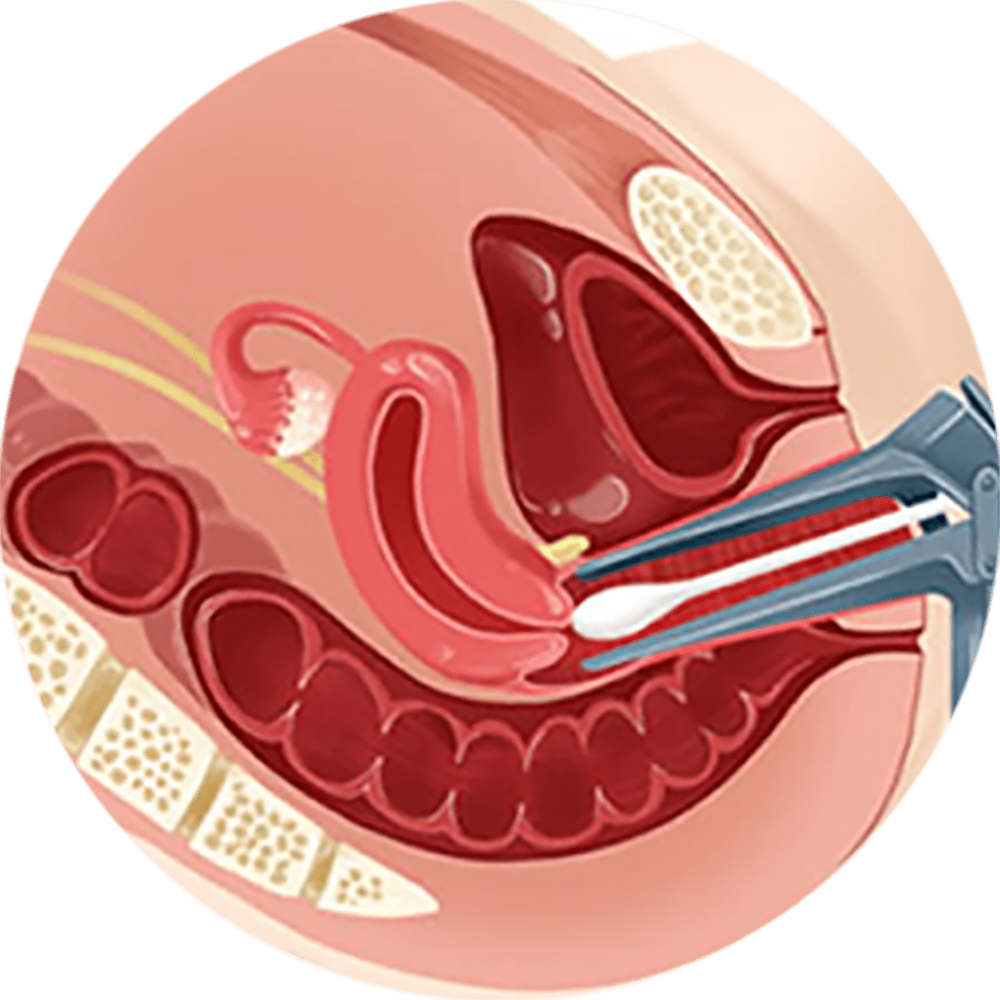
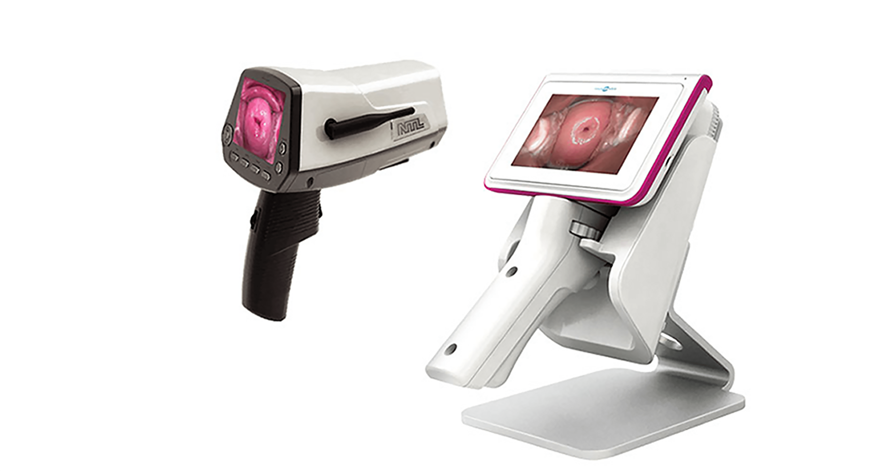
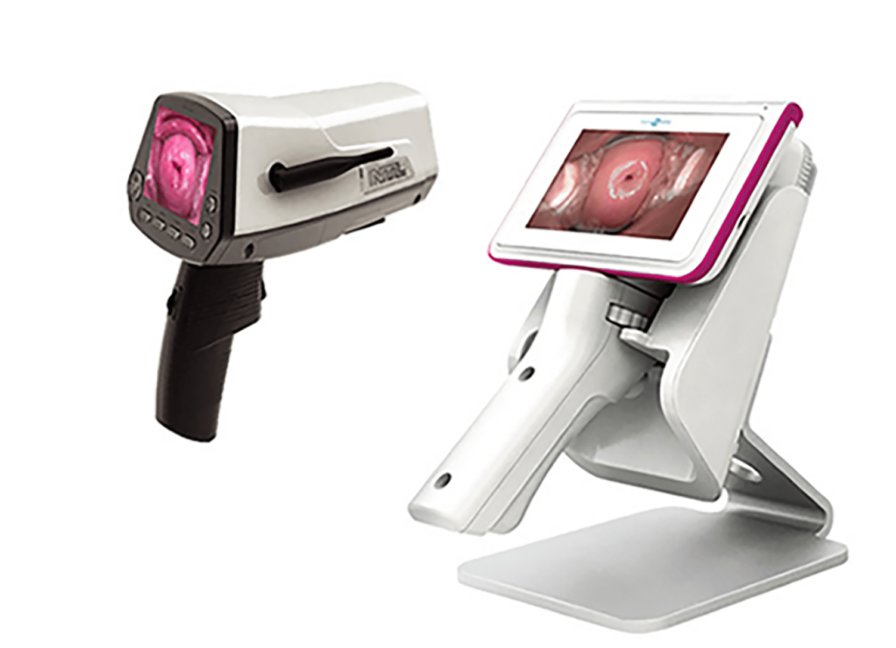

나를 위한
자궁경부암 검진
매년 세계적으로 자궁경부암으로 사망하는 여성은 27만명 이상으로
우리나라에서는 인구 10만명 당 11명이 암을 진단 받고,
3명이 자궁경부암으로 사망하고 있습니다
OECD 국가 중 자궁경부암 생존율이 가장 높은 우리나라도
5년 생존율 약 80%로
자궁경부암 환자 5명 중 1명꼴로 여전히 목숨을 잃고 있고,
50세 전후 여성에게 주로 발병하던 자궁경부암은
최근 20,30대 사이에서도 크게 증가하고 있습니다
자궁경부암 세포검사
국민건강보험공단 건강검진 대상자에 해당하는 20세 이상
여성이라면 2년에 1회 자궁경부암 검진을 받아야합니다.
이전에는 30대부터 가능했던 자궁경부암 검진을 2016년부터
20대 여성도 받을 수 있도록 검진 연령을 확대했습니다.

질경 이라는 기구를 삽입 후자궁 경부에 작은 면봉을 삽입하여
자궁경부의 세포를 채취 해
이상 유무를 파악 관찰하여 검사합니다.
자궁경부암
텔레써비코 검사
(확대촬영 검사)
텔레써비코 검사는 자궁경부를 최대 50배 확대 촬영하여
자궁 경부의 이상 유무를 판독하는 형태학적 검사입니다.
미국 위스콘신 의과대학에서 국제 판독자격을 부여받은
국내병원 부인종양전문의에 의해 판독됩니다.


-
텔레써비코 단독검사 시 정확도 94%, 세포 검사와 동시 시행 시
98%로 세포 검사의 낮은 정확도를 보완합니다. -
통증이 거의 없고 기존의 일주일 이상 소요되던 검사시간을
최대 24시간으로 단축시켜 검사시간이 매우 짧습니다. -
병변을 영상을 기록하여 자궁경부 세포가
암으로 변화되는 과정을 추적 관찰이 가능합니다. - 고성능 촬영 장비로 사소한 병변도 판독이 가능합니다.